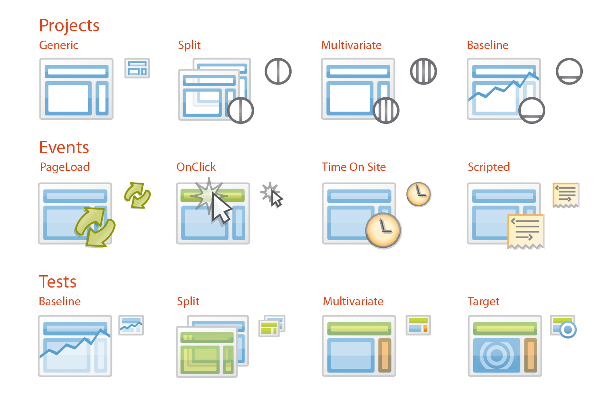
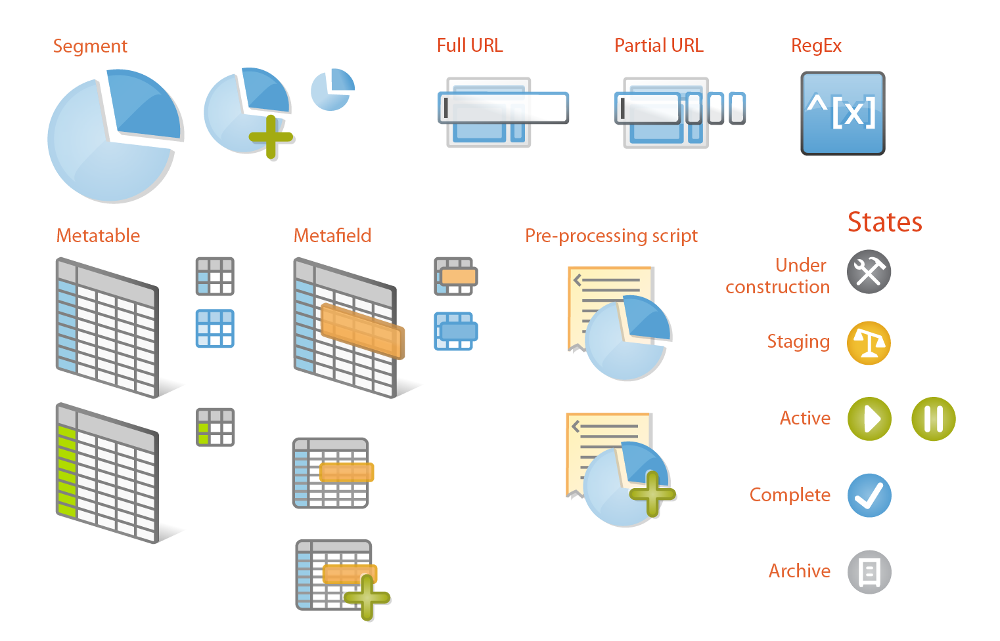
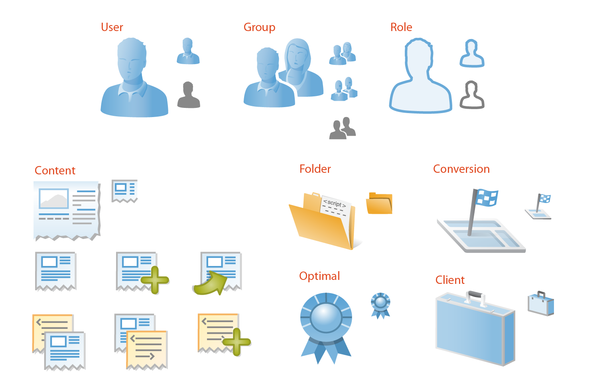
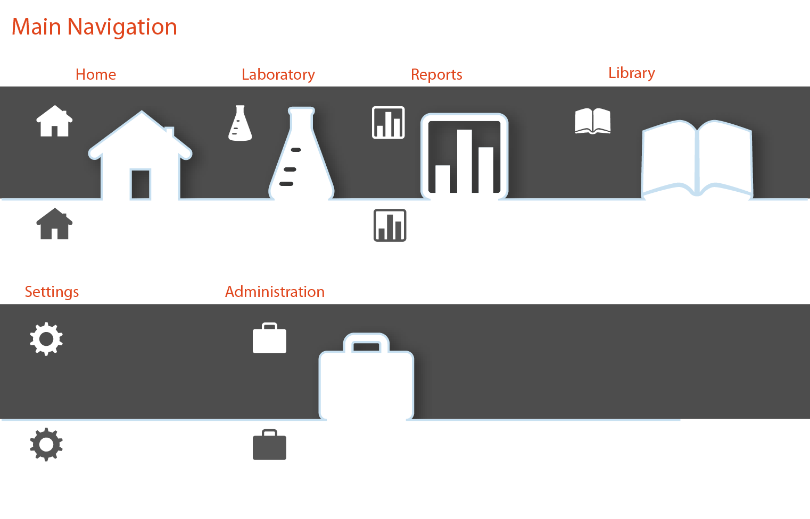

WORK
Selected items for conversation
Infinity™ Reporting
- Contributions: Dev Team Mgr, UX, Test, Writer
Webtrends Infinity Reporting is an Analytics reporting interface for enterprise businesses. This UX is a seemless integration of several independent apps behind a single proxied URL: app.webtrends.com.
As Dev Team manager, I lead all the application and services development, UX design, and product testing needed to "get data out" of Webtrends.
All Webtrends UI must pass my desk.
Optimize Visual Editor
- Contributions: UX, UI, Illustration, Writer, User Research, Dev Team Mgr
Optimize™ Visual Editor is a content testing app. It is the latest generation of the optimization workflow I originally designed in 2009.
My role in this project has evolved in that time from individual contributor UX to dev team owner. Optimize was invented at the startup Widemile where I was the sole designer.
-

Interface controls on a 'sketchpad', where the entire visual language is easily visible and accessible.

Icons & Illustration
- Contributions: Semiotics, Illustration
I love to draw!
Art has been the primary focus of my life and I always jump at the chance to create original work.
-

Optimize test object types, large and small icons.
-

A selection of icons created for Optimize.
-

A selection of icons created for Optimize.
-

Optimize main navigation. White icons "connect" to white console frame.
-

An export of the main 'sketchpad' Illustrator layer. Each symbol was handcrafted, now most are readily availabe through resources like FontAwesome.
Microsoft Server UI
- Contributions: UX, UI, User Research, Illustration, Evangelist
- Products: Small Business Server, Home Server, High-powered Computing UI
Small Business Server 2008 and Home Server 2008, UI in the time of CD installation and box packaging.
This is some old stuff now but it serves me well to represent how much UI craft has changed in the past decade!